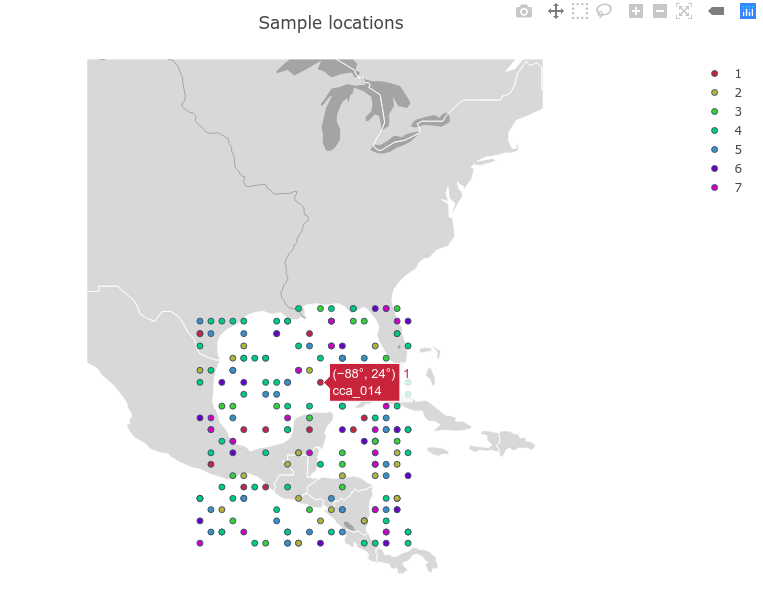

Plotting
The output of many functions are formatted for use in your favorite Julia plotting environments, such as Plots, Makie, PlotlyJS, PyPlot, Gadfly, etc. However, some convenience plots are provided to assist with speedy data visualization and exploration.
plot missing data
plot_missing(x::PopObj; color = false)
Return an interactive plot of the number of missing loci in individuals of a PopObj, along with the number of missing individuals per locus. To set a custom color palette, use color = [color1, color2, ...]
Example:
julia> plot_missing(a)

If you would like to save the interactive plot as a local HTML file (does not require Plotly account):
using PlotlyJS PlotlyJS.savehtml(plot_missing(a), "filename.html")
This will save it in the current working directly as whatever you replace filename.html with. If you want the file to work properly offline, add a third option argument :embed, although be aware it inflates the file size (~3.5mb for the test data).
plot sample locations
plot_locations(x::PopObj; region = "world", projection = "orthographic")
Returns a simple lower resolution interactive scatterplot of the individuals in a PopObj. Default region and projection are "world" and "orthographic", respectively. If a specific region is set, the plot will default to "mercator" projection unless projection = is used to specify a different one.
Example:
julia> a.latitude = rand(10:30, 212); a.longitude = rand(-99:-80, 212) ; julia> plot_locations(a)

julia> plot_locations(a, region = "north america", projection = "mercator")`

regions
- usa
- europe
- asia
- africa
- north america
- south america
projections
- equirectangular
- mercator
- orthographic
- natural earth
- kavrayskiy7
- miller
- robinson
- eckert4
- azimuthal equal area
- azimuthal equidistant
- conic equal area
- conic conformal
- conic equidistant
- gnomonic
- stereographic
- mollweide
- hammer
- transverse mercator
- albers usa
- winkel tripel
- aitoff
- sinusoidal
Saving
As before, you can save the plot to an HTML file:
using PlotlyJS PlotlyJS.savehtml(plot_locations(a, region = "north america", projection = "mercator"), "filename.html")